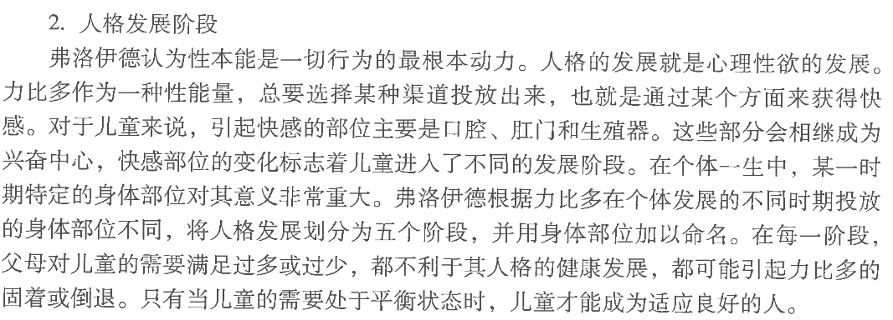

笔记 1（1~4周）
约 3,106 字
约 8 分钟
笔记的重点和思考置于框图内
几个重点？
- 皮亚杰认知发展理论
- 发展心理学的研究方法和设计
- 一些儿童观的经典理论
绪论和研究方法
发展：
- 毕生持续
- 可塑性
- 发展过程存在关键期（洛伦兹对动物印刻行为研究）
- 发展过程中不同能力互相代偿，一种能力的损伤缺失能够被另一种能力代偿。（失明后以耳代目）
- 情景性
- 发展在特定时空中发生
- 生态系统理论结构
- 微观系统
- 中间系统
- 外层系统
- 宏观系统
- 历史系统 Chronosystem（书本为：历时系统）

发展心理学（通常指狭义）：
- 广义：研究心理发展及其规律的学科（包括比较心理学，民族心理学等）
- 狭义：即个体发展心理学
发展心理学研究目标、目的
- 揭示或描述心理发展过程共同特征与模式（最根本）
- e.g. 共性：生活在不同文化背景下的儿童共同具有的发展过程
- 揭示心理发展的原因和机制
- 测量和解释个体差异
- 如何评估差异？ → 样本均值
- 探究不同环境对发展的影响
- 帮助和指导儿童的发展
发展心理学的四个基本理论问题
- 遗传与环境
- 同卵双生，异卵双生控制变量
- 遗传素质确定发展的区间（上限下限），环境只能在区间内发挥作用
- 遗传与环境相互作用
- 主动性与被动性
- 个体发展的不同阶段，遗传-环境-个体的关系不断变化
- e.g. 母亲讲述事情的精细程度，影响孩子的记忆能力
- 普遍性和特殊性
- 共性
- 特性
- 连续性与阶段性
- 心理年龄特征（划分阶段）
- 本书使用能力体例划分阶段
- 质的不同与量的不同
研究方法
-
测量技术/数据收集
- 调查法
- 问卷法
- 访谈法
- 观察法
- 自然观察
- 实验室观察
- e.g. 棉花糖延迟满足实验
- 优点：
- 比自然观察更好地控制研究情境
- 有助于研究观察者见到在日常生活中很少有机会见到的行为
- 效率较高
- 测验法
- 实验法
- 临床法
- 研究者根据被试对上一个问题的反应相应地提出下一个问题的访谈法
- 步骤：观察、谈话、实物操作
- 注意事项
- 访谈问题的设计(开放式问题与闭合式问题;直接问题和间接问题)
- 提问的技术(提问的方式;暗示性实验;用语的选择;善于提出假设、通过提问验证假设等)
- 访谈记录
- 优点：
- 可以灵活地把被试当作独特的个体来考察
- 自由的追问可以保证被试真正理解所问问题的意义
- 缺点
- 因为没有同等地对待被试,所得结论可能不可靠
- 灵活的追问在一定程度上依赖于研究者对被试反应的主观解释
- 只适用于有一定口头表达能力的人
- 调查法
-
变量间关系的检测
- 相关研究
- 实验研究
-
研究设计（4种）
- 横断设计

- 纵向设计（追踪研究）
- 缺点：
- 重测效应：第二年比第一年测试好（练习效应）
- 花费大（钱、时间）
- 被试流失
- 优点：
- 连续
- e.g. 南方周末少年班去向研究
- 缺点：
- 聚合交叉设计
- 没啥用的损招
- 优点：
- 只要在相对较短时间的追踪测量，就可以分析某一心理特征在较长时间内的拜年话发展趋势
- 减弱练习效应
- 减少被试流失
- 减少研究费用


- 微观发生设计
- 纵向，时间短，测多次
- 适用于某种能力在时间内变化很快
- 横断设计
my thinking
- 什么是测量，心理上的东西怎么测量，怎么量化
资料： - 社会赞许性，倾向于没那么真实（问卷可能造成的情况，有时候我也不会如是填写问卷）
- 研究人的心理活动时存在变量，心理上的变量怎么控制，实验设计还是会存在许多缺陷吧
经典理论
儿童观 timeline：
- 17、18 世纪西方启蒙哲学
- 洛克的白板说
- 行为主义环境决定论
- 卢梭的机能论
- 儿童发展冬季来自机体本身，发展过程由自然力量决定
- 四阶段：婴儿、童年、童年后期、青少年期
- 达尔文是科学地研究儿童的先驱
- 育儿日记
- 自然选择和生存竞争
- 霍尔和格塞尔的成熟势力说：强调生理成熟准备程度
- e.g.双生子爬楼梯
- 成熟的顺序取决于时间表，年龄为树妖参照

- 洛克的白板说
- 20 世纪中叶
- 弗洛伊德的性心理发展理论 p173
- 用“力比多”的释放划分人格发展阶段
- 口唇期
- 肛门期
- 性器期
- 潜伏期
- 青春期
- note：弗洛伊德的研究基于病理样本，放在正常人身上要慎重

- 用“力比多”的释放划分人格发展阶段
- 埃里克森的社会心理发展理论
- 人的发展时期分为八个阶段，由遗传因素决定，但是阶段是否顺利度过由社会环境决定
- 心理发展的每一阶段都存在“危机”
- 积极解决危机→增强自我力量
- 消极解决危机→削弱自我力量

- 行为主义观
- 华生
- 心理的本质是行为,研究对象是可观察到的行为,而不是意识
- 研究方法应该是客观的方法;
- 研究目标是预测人的行为,控制人的行为
- 婴儿害怕的条件反射
- 强调注意刺激与反应之间的可预测关系
- e.g.哭声免疫法
- 斯金纳
- 条件反射
- e.g.斯金纳箱
- 华生
- 班杜拉的社会学习理论
- 观察学习
- 皮亚杰的认知发展理论
- 弗洛伊德的性心理发展理论 p173
- 20 世纪下半叶的发展心理学理论
- 信息加工理论
- 习性学
- Bronfenbrenner 的生态系统论
- 维果茨基的社会文化理论
- 朴素理论
早期认知发展
皮亚杰认知发展理论
概念
图式
- 用来应对和解释某些经验的有组织的思维或行为模式,它是人类认识事物的基础
- 遗传性
- 后天获得
- 可小可大,可一般可特殊
适应
- 通过同化与顺应实现，打破不平衡，实现新的平衡
- 同化:用已有的认知结构或经验去解释新事物
- 顺应:当主体的图式不能认知或解释新的事物时,要改变和创新原有的图式
平衡
- 有机体与环境之间的平衡
- 为了避免心理成分之间的冲突所带来的紧张感,个体通过自我调节机制使认知发展从一个状态向另一个更高的状态的过渡的过程
- 持续一生,是儿童认知发展的动力
认知发展阶段
- 感知运动阶段（0-2 岁）
- 反射练习期（0-1月）
- 无条件反射练习，巩固反射结构（吮吸反射等）
- 习惯动作期（1-4.5月）
- 有目的动作逐步形成期（4.5-9月）
- 手段与目的分化协调期（9-11 or 12月）
- 客体永存开始发展
- 客体永存不成熟，会有“A 非 B 错误”（e.g.baby放玩具）
- 客体永久性获得期（1.5-2岁）
- 1.5-2 岁会获得客体永恒性
- 反射练习期（0-1月）
- 前运算阶段（2-7 岁）
- 象征思维期（2-4岁）
- 形成和使用符号的能力（e.g.小孩画画）
- 直觉思维期（4-7岁）
- 不能完成守恒
- 不能利用补偿原则
- 不能利用可逆原则
- 中心化：不能将注意力集中到两个维度上，只能注意到一个维度（e.g. 两个杯子倒水，小孩排列饼干）
- 自我中心特点："三山实验"
- 泛灵论：觉得万物有灵，玩偶是活的
- 不能完成排序
- 不能完成类包含任务（e.g.花多还是黄花多）
- 不能区分外表和真实
- 不能完成守恒
- 象征思维期（2-4岁）
- 具体运算阶段（7-11、12 岁）
- 运算：在观念上的可逆操作
- 成就：
- 获得守恒，去中心化
- 群集运算形成
- 类包含
- 序列化（e.g.长短排序）
- 局限
- 必须用实物
- 水平参差
- 形式运动阶段（11、12-...成年）
- 对运算的运算可以在头 脑中将形式和内容分开,可以离开具体事物,根据假设来进行逻辑推演的思维
- 不但能够练习具体事物解决问题，而且能够从可能性出发，练习现实来解决问题。
- 不受真实情境的束缚，将心理运算用于可能性和假设性情境
- 假设性推理:三段论推理问题
- 现实与可能之间能实现逆转:不再局限于具体问题情境,而是更倾向于从可能性开始,仔细考虑可能的问题情境和解决方案
- 通过假设想象表征世界
- 自我中心意识苏醒
- 经验归纳和假设演绎:充分利用假设和来自假设的逻辑演绎
- e.g.钟摆实验
- 命题内与命题间:不再个别地考虑命题,而是涉及命题与命题间的关系
维果茨基
- 认知发展发生于社会文化背景中,社会文 化影响着认知发展的形式
- 儿童的许多重要认识技能是在与父母、老 师以及更有能力的同伴的社会交往中逐渐发 展起来的
- 理论核心:儿童的智力发展与他们所处的 文化关系密切,智力发展的过程还是内容都 不会像皮亚杰所假设的那样具有普遍性
四种水平
- 微观发生学
- 个体发生学
- 种系发生学
- 社会历史发展
社会文化理论
社会相互作用
- 促进低级心理机能转化为高级心理机能(智力适应工具)
- 可以促进外部言语转化为内部言语,获得新的思考方式,内部语言可以指导、调整自己的行为,以自己的方式获得
- 新技能 -- 心理机能内化说(与皮亚杰比较)
典型实验
| 实验/研究名称 | 相关学者/流派 | 所属章节与知识点 | 实验目的/核心意义 |
|---|---|---|---|
| 动物印刻行为研究 | 洛伦兹 | 绪论：发展的可塑性 | 证明心理和行为发展过程中存在“关键期”。 |
| 棉花糖延迟满足实验 | 米歇尔 | 绪论：研究方法 - 实验室观察 | 作为实验室观察的典型例子，该方法能更好地控制情境并观察日常少见的行为。 |
| 双生子爬楼梯实验 | 霍尔和格塞尔 | 经典理论：成熟势力说 | 强调生理成熟准备程度，证明成熟的顺序取决于内在的时间表。 |
| 婴儿害怕的条件反射 | 华生 | 经典理论：行为主义观 | 证明心理本质是行为，强调刺激与反应的预测关系，目标是预测和控制人的行为。 |
| 杯子倒水/排列饼干实验 | 皮亚杰 | 皮亚杰理论：前运算阶段 | 测验守恒与中心化。证明该阶段儿童不能利用补偿和可逆原则，注意力只能集中在一个维度（中心化）。 |
| 三山实验 | 皮亚杰 | 皮亚杰理论：前运算阶段 | 证明该阶段儿童思维具有“自我中心”的特点，难以从他人的视角看问题。 |
| 花多还是黄花多任务 | 皮亚杰 | 皮亚杰理论：前运算阶段 / 具体运算阶段 | 即类包含任务。前运算阶段儿童无法完成，到具体运算阶段（群集运算形成）才能掌握。 |
| 钟摆实验 | 皮亚杰 | 皮亚杰理论：形式运算阶段 | 证明该阶段个体能够进行经验归纳和假设演绎，能够利用假设进行逻辑推演。 |
关联笔记
正在整理关联笔记...